| Lexi-Cross Revisited |
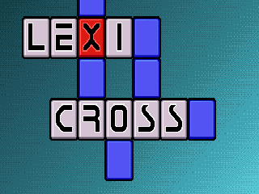
| Lexi-Cross Revisited is an overview of Lexi-Cross to provide an idea of the game flow. Keep in mind that Diddley is similar in gameplay, but more minimalist in presentation. |
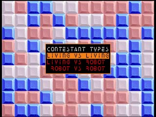
| Lexi-Cross is presented as the TV Gameshow of the future in which the player or players are contestants. It is playable by one player against another, one player against the computer, or you could sit back and watch two AI opponents play against each other. The computer AI opponents were presented as robots. |
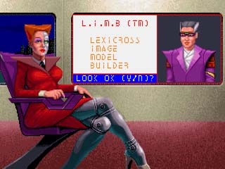
| The contestant first provides personal information in the pre-show interview, conducted by backstage assistant Pristine Mint. The player establishes an identity, by choosing a name, place of birth, etc. Then the player constructs an image from various body parts. Of course, if the place of birth is from another planet, the choices have a distinctly alien look. |
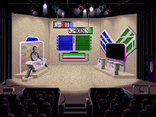
| The show is filmed entirely in front of a live studio audience, of course. |
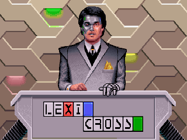
| The host of Lexi-Cross is Chip Ramsey. He chats with the contestants, provides lively banter, comments on the action and keeps the game moving along. In short, he does all those things a good hosts are supposed to do. The trouble with Chip is that he speaks in beeps and bonks. His comments appear as text in the podium's front panel. |
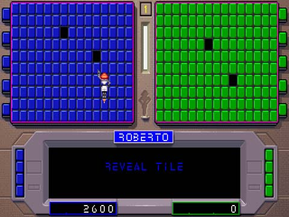
| The players start by selecting tiles on their respective boards to expose what is hidden underneath. Each board has the same word clues, but in differing configurations. The tiles are turned by Robanna Silver, a little flying droid that the players control with the mouse or keyboard. |
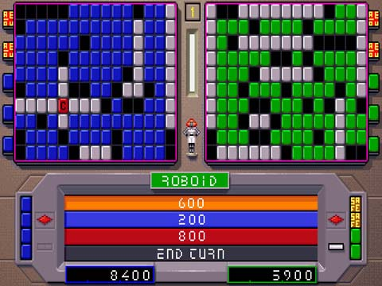
| The white tiles represent spaces containing letters. There are also a number of other tokens hidden behind the tiles which affect the players score or allow strategic options. For instance, the Vowel Tokens allow a player to choose vowels. Trivia Token - indicated by a colored question mark. If the next tile flipped matches this tile, the Wheel is spun and the player has an opportunity to answer a trivia question. The question may be related to the subject of the Puzzle, giving it added value as a clue. If answered correctly, the value returned by the Wheel is added to the player's total score. For now, we will not delve into explanations of all the special tokens. This illustration shows the Wheel. When a number of white tiles are exposed, the player will spin the Wheel and obtain point values for correctly guessing letters in the matrix. |
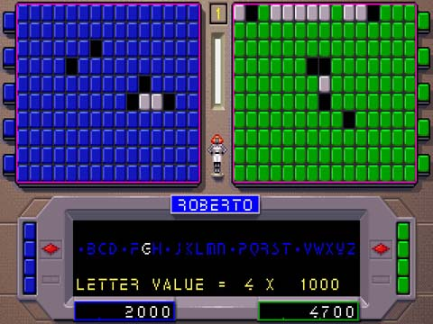
| In this example, the wheel landed on 1000. The player selects the letter G which has a value of 4. If there are one or more G's behind the exposed white tiles, the player scores that number times 4 times 1000. |
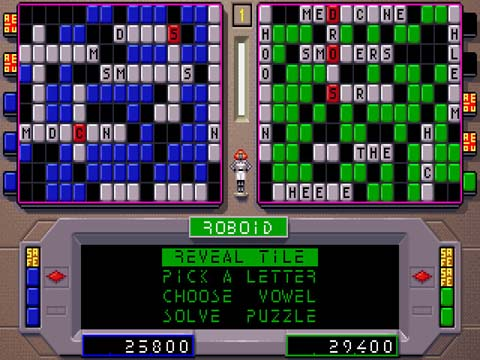
| Here, much of the board has been exposed. Not all the words are evident, but when there are enough clues, the player must guess what all the words have in common. |
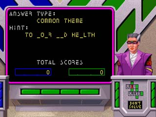
| Player #2 has elected to try and solve the puzzle. Some of the letters in the Hint are given. These are letters that have been exposed on the player's board. It appears the Hint is "To your bad health". Although it is not illustrated here, the number of letters and words in the answer are indicated in the typing area. |
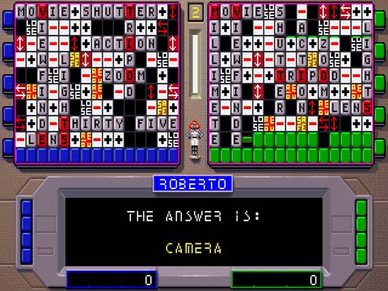
| Players may choose to abandon a Puzzle at any time. This screen shows the tiles of an abandoned Puzzle being turned, revealing all the letters and tokens, with the answer given below. |